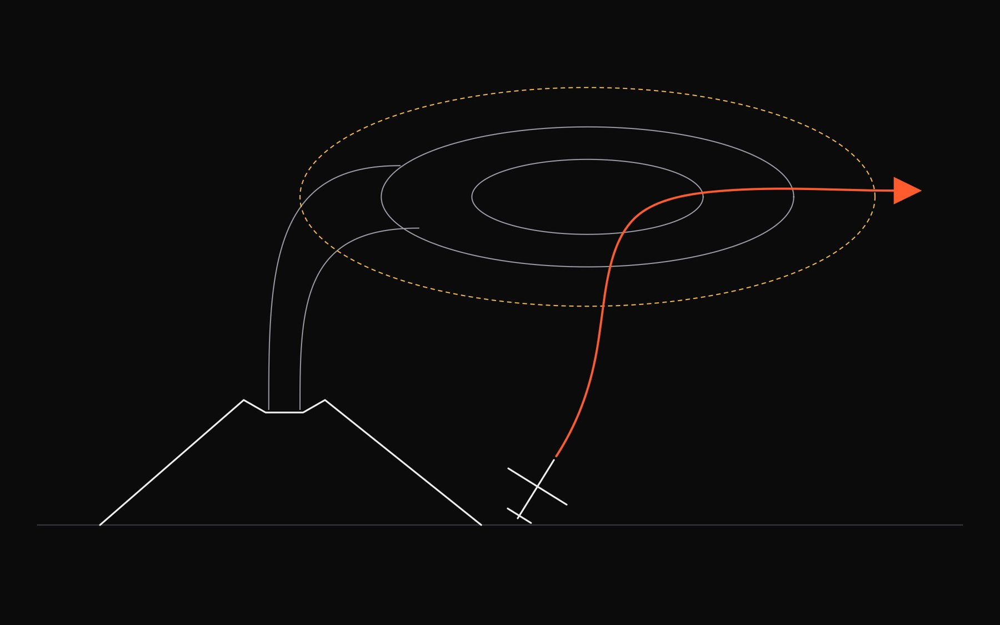
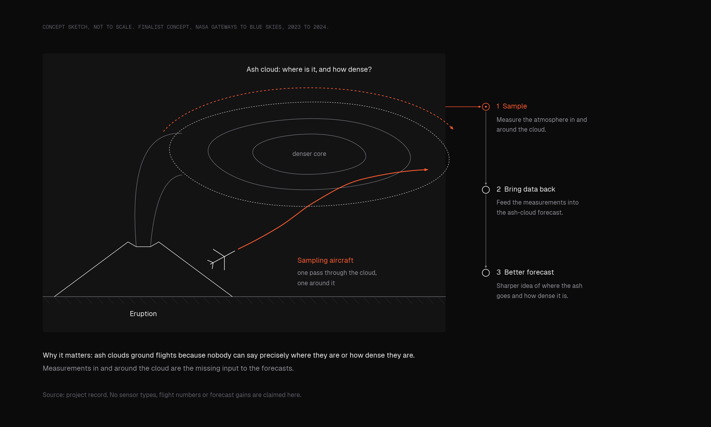

Space · 2023 – 2024 · Competition finalist
Sampling volcanic ash from the air
An aviation system to sample the atmosphere around eruptions and improve ash-cloud forecasts.

- FinalistNASA Gateways to Blue Skies, 2023–24
- 1aviation system concept
- 2023–24academic year of the competition
- Ashthe forecasting gap it targets
Finalist in NASA's Gateways to Blue Skies competition (2023–24) with a concept for sampling atmospheric conditions around volcanic eruptions to improve forecasts of where the ash goes.
01Why it matters
Ash clouds ground flights because nobody can say precisely where they are or how dense they are. Measurements taken in and around the cloud are the missing input to the forecasts.


02The concept
An aviation system built to sample the atmosphere around a volcanic eruption and bring the data back to improve the forecasts of where the ash cloud goes. It was selected as a finalist.